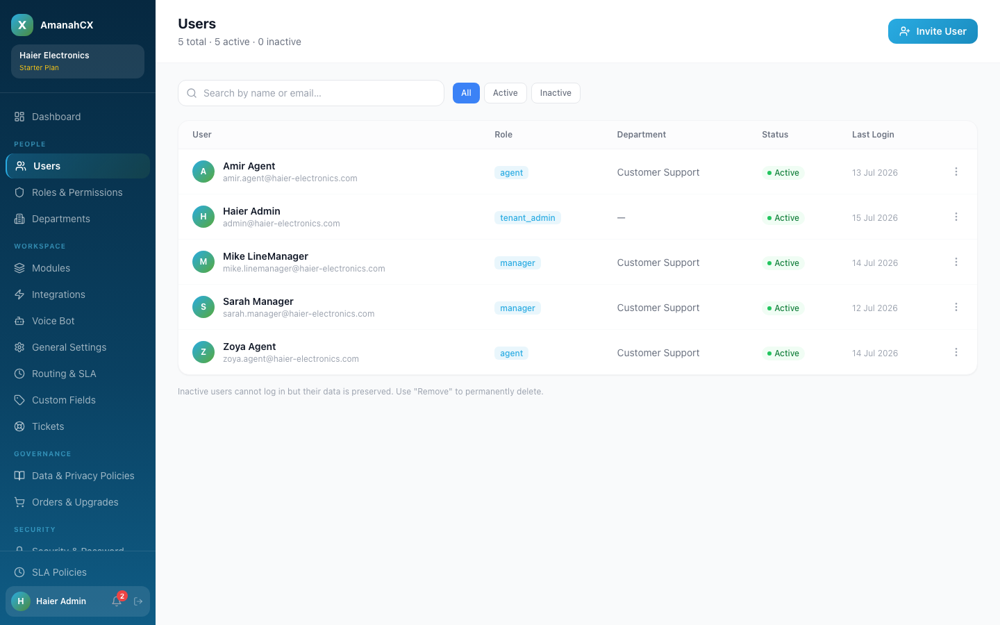
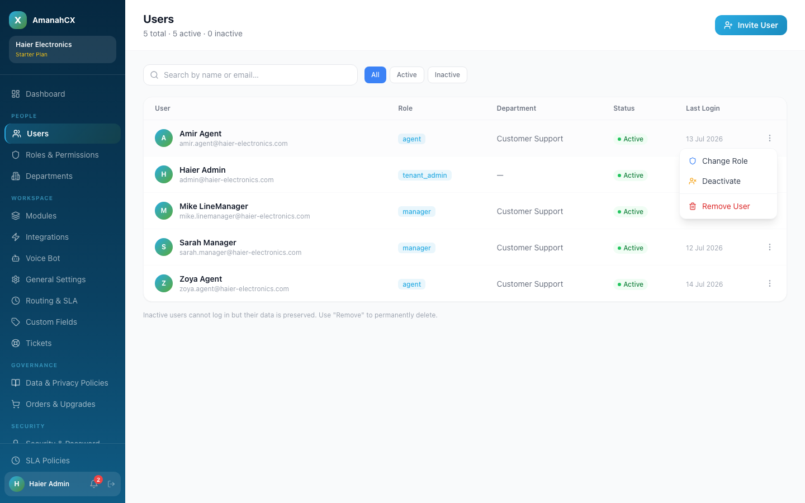
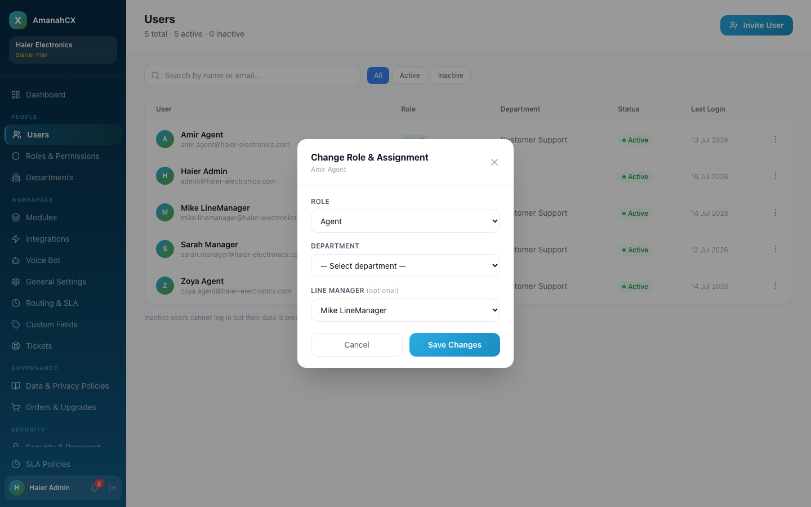
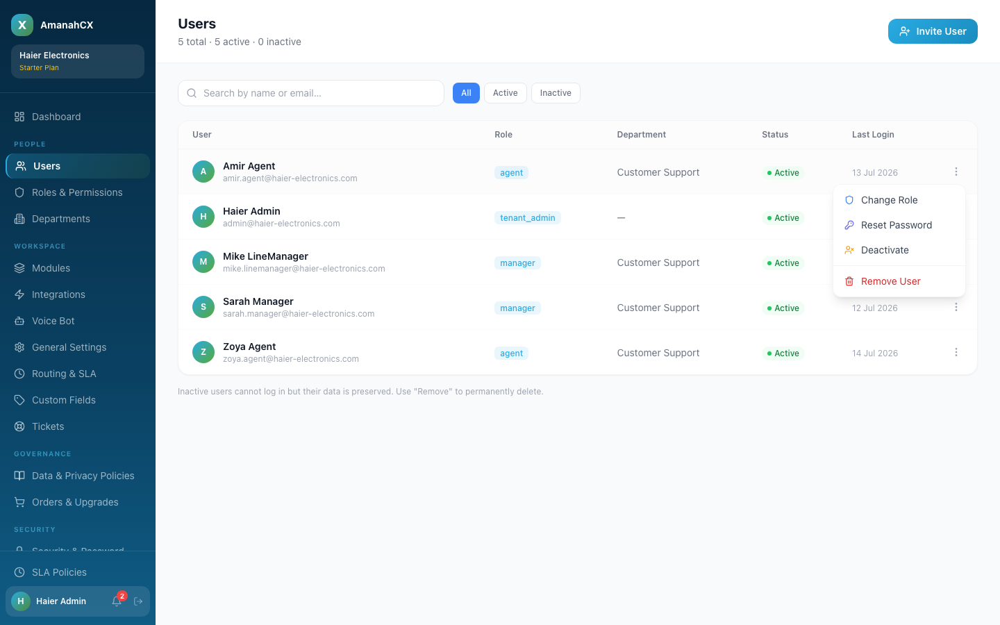
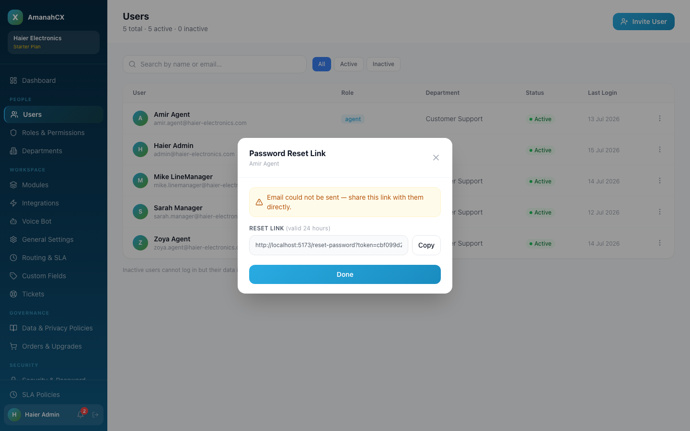
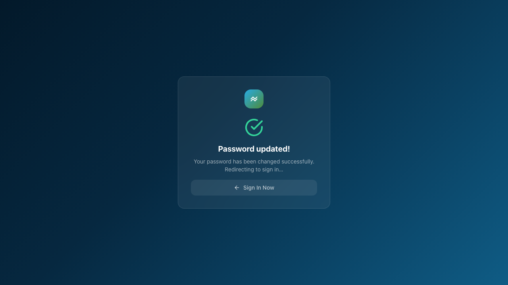
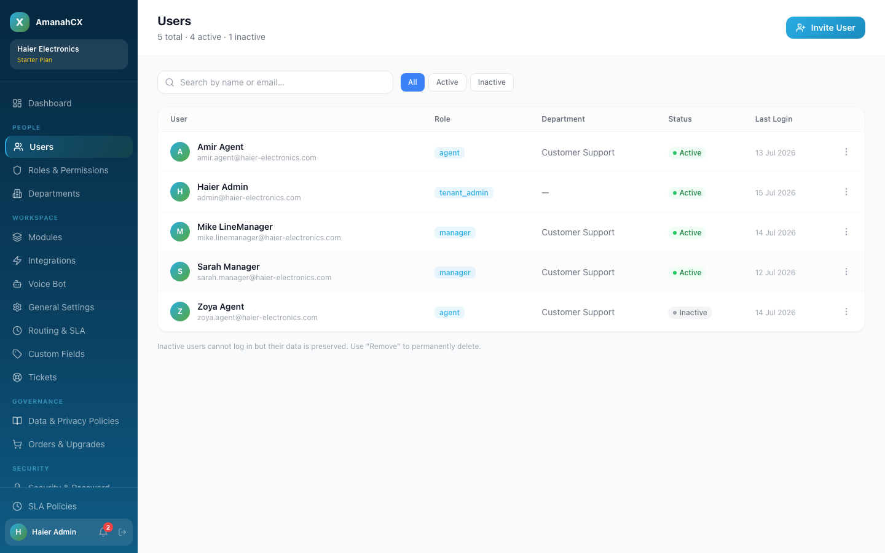

The Users page (People → Users) is where a Tenant Admin manages every team member: who's invited, what role they hold, which department they belong to, and who their line manager is.

Covered step-by-step in Getting Started: click Invite User, fill in name, email, department, role, and (optionally) their manager. An email goes out with a 7-day password-setup link.
Click the ⋮ menu at the end of any user's row.

Change Role opens a form where you can update all three assignment fields at once:

| Field | What it controls |
|---|---|
| Role | What this person can see and do (see Roles & Permissions). Changing role can also change their manager options below. |
| Department | Which team they belong to. Changing this can clear the manager field if the previous manager doesn't belong to the new department. |
| Line Manager / Department Manager | Who this person reports to. The dropdown automatically only shows managers that make sense: agents are offered managers who already have their own line manager set (i.e. real department managers), while managers being reassigned are offered only senior managers. If no suitable manager exists yet in that department, a warning appears instead of an empty silent dropdown. |
If a user forgets their password, they can use "Forgot password?" on the login screen themselves — but as a Tenant Admin you don't have to wait for that. From the same ⋮ menu, click Reset Password to generate a fresh reset link for them directly.

This creates a secure link valid for 24 hours and tries to email it to the user automatically. Regardless of whether that email actually goes out, the link is also shown right on screen with a Copy button — so you can share it yourself (WhatsApp, in person, however works) if email delivery isn't working.

Whoever uses the link lands on the same "Set new password" screen a first-time invite goes through — they choose a new password and are signed in.

Deactivate blocks the user from logging in but keeps all their historical data (tickets, activities, notes) intact — use this for someone leaving temporarily or under review.

Remove User is permanent — the page explicitly warns "Inactive users cannot log in but their data is preserved. Use 'Remove' to permanently delete." Only use Remove when the account should be gone entirely, not just paused.
There was no way to change a user's department or line manager after they were invited. The "Change Role" screen only let you change the role — department and manager could only ever be set once, at invite time. Since the backend already fully supported updating these fields, this was a missing screen, not a missing capability. Built and added Department and Line Manager fields to the same modal, with the same smart manager-filtering logic used at invite time. Verified live: reassigned a real user to a different department and back, confirmed the change saved correctly in both the interface and the database each time, with no data loss to other fields.
The Department dropdown in that same new screen didn't pre-select the user's current department the first time it was built — it loaded the list of departments a moment after the screen opened, and by then it was too late to apply the pre-selection. Fixed so it fills in correctly once the department list is ready. Verified: opening the screen for a real user now correctly shows their actual current department immediately.